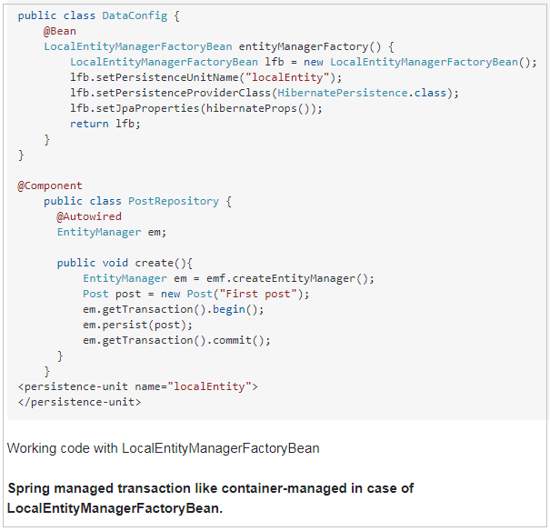
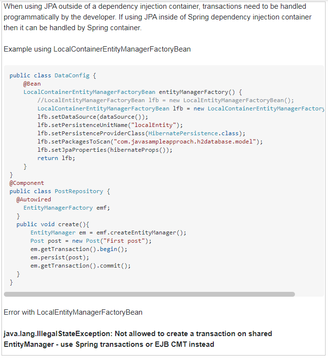

Basically JPA specification defines two types of entity managers. They are :
Application-Managed : Application Managed entity manager means "Entity Managers are created and managed by merely the application ( i.e. our code )" .
Note : Created and Managed (above) means "opening , closing and involving entity manager in transactions"
Entity managers are created when an application directly requests one from an entity manager factory. With application-managed entity managers, the application is responsible for opening or closing entity managers and involving the entity manager in transactions. This type of entity manager is most appropriate for use in standalone applications that don’t run in a Java EE container.
Container Managed : Container Managed entity manager means "Entity Managers are created and managed by merely the J2EE container ( i.e. our code doesn't directly manages instead entity managers are created and managed by container , and our code gets EM's through some way like using JNDI ).
Entity managers are created and managed by a Java EE container. The application doesn’t interact with the entity manager factory at all. Instead, entity managers are obtained directly through injection or from JNDI. The container is responsible for configuring the entity manager factories. This type of entity manager is most appropriate for use by a Java EE container that wants to maintain some control over JPA configuration beyond what’s specified in persistence.xml.
LocalContainerEntityManagerFactoryBean - container managed
LocalEntityManagerFactoryBean - application managed
A Big Note : For spring based applications, the difference is not much. Spring only plays roles ( as container if you configure LocalContainerEntityManagerFactoryBean and as application if you configure LocalEntityManagerFactoryBean)